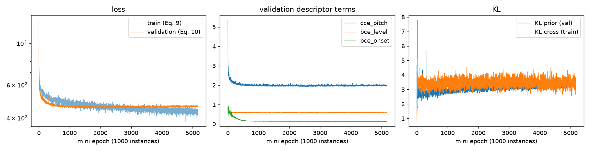
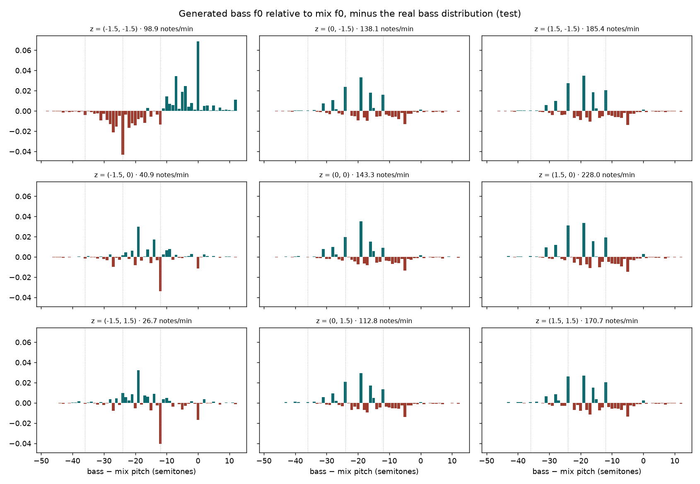

First training of the strictly causal BassNet on real-scale multitrack data. The model learns from the mix, two random seeds agree to within 0.01 nats, and its two-dimensional latent space contains a reliable control for how busy the bass line is.
Summary
Slakh2100 renders 2100 songs from the Lakh MIDI dataset with professional sample-based virtual instruments,
and ships every instrument as a separate audio stem together with its MIDI. We use the redux release,
which moves songs whose MIDI duplicates another song into an omitted split, so that no song is in
both training and test.
| Split | Tracks | With bass | Two or more bass stems | Hours | Used: single-bass tracks | Used hours |
|---|---|---|---|---|---|---|
| train | 1289 | 1204 | 136 | 88.9 | 1068 | 72.9 |
| validation | 270 | 249 | 22 | 18.3 | 227 | 15.4 |
| test | 151 | 143 | 13 | 11.0 | 130 | 9.3 |
| omitted (not used) | 390 | 360 | 24 | 26.7 | — | — |
Bass instruments (per stem, training split): electric bass, finger 654 · fretless 516 · electric bass, pick 89 · slap 77 · acoustic 35. Validation is used for early stopping only; all reported numbers are on the test split, which the paper did not have.
On every track checked, the best gain between mix.flac and the sum of the stems is 1.000 and the residual is 0.07–0.15% of the mix energy (16-bit quantisation level). The input mix can therefore be rebuilt exactly from the stems, without the bass.
Slakh's bass MIDI is written in bass-guitar notation, one octave above the sounding pitch: comparing CREPE on the audio with the MIDI gives an offset of exactly −1200 cents on 96–100% of frames. Taking this into account, the lowest sounding note is B1 (61.7 Hz), so our CREPE floor of 41.2 Hz (E1) covers the whole range. Lowering it to 30.9 Hz makes torchcrepe's decoding fail.
The training targets come from CREPE, as in the paper. Against the MIDI on 60 validation tracks, 96.1% of voiced frames are within 50 cents, with 1.0% octave errors and a median error of 8 cents; voicing recall / precision are 0.89 / 0.91.
The one bad case (2.4% within 50 cents) has two bass stems playing in different registers, which a single f0 cannot describe. Tracks with more than one bass stem (11% of training) are therefore left out of this first baseline.
Every component reads only past audio, so the model can run in a live setting; the right-aligned CQT kernels remove the blind zone that a centred causal CQT leaves before "now" (on artificial data this cut the cost of causality from 0.065 to 0.0025 nats). Training follows the paper: Adam, learning rate 10⁻⁴, batch 20, mini-epochs of 1000 instances, early stopping with patience 3000 mini-epochs.
Two runs, identical except for the random seed. With the features held in RAM a mini-epoch takes about 9 s. Run 2 was pre-empted once by the scheduler and resumed from its saved state without losing progress.
| Run | Best validation loss at | Best descriptor loss at | Stopped at | Wall time |
|---|---|---|---|---|
| Run 1 · seed 0 · H200 | 2168 | 2539 | 5168 | 13.3 h |
| Run 2 · seed 1 · H100 | 2040 | 2130 | 5040 | 13.0 h |

4000 windows from the 130 test tracks, losses averaged per element; pitch counts voiced frames only. The reference row predicts from the training-set statistics alone: the histogram of training bass pitches, and constant level and onset probabilities.
| Pitch CCE | Level BCE | Onset BCE | Within 50 cents | Median error | |
|---|---|---|---|---|---|
| Training statistics only (ignores the mix) | 3.199 | 0.681 | 0.190 | — | — |
| Run 1 · seed 0 | 2.041 | 0.578 | 0.132 | 60.1% | 16 c |
| Run 2 · seed 1 | 2.037 | 0.575 | 0.133 | 60.2% | 15 c |
| For comparison: artificial dataset A1, same configuration | 0.76 | — | — | 94% | — |
When the model is right it is precise (median error 15–16 cents); most misses are other notes of the key rather than tuning errors. For context, 70% of voiced test frames have the same pitch as 100 ms earlier, so simply continuing the current note is a strong strategy that a causal model which never hears the bass cannot use directly.
To listen to the output, predicted descriptors are turned into notes: a note starts at each peak of the onset curve above a threshold. The default threshold of 0.5 recalled only 14% of onsets, so it was tuned on 30 validation songs against the MIDI note starts (±50 ms): F1 peaks at 0.15 for run 1 and 0.20 for run 2.
| Threshold (validation, run 1) | Precision | Recall | F1 |
|---|---|---|---|
| 0.05 | 0.365 | 0.777 | 0.497 |
| 0.10 | 0.490 | 0.697 | 0.575 |
| 0.15 (chosen) | 0.550 | 0.641 | 0.592 |
| 0.20 | 0.591 | 0.582 | 0.586 |
| 0.30 | 0.654 | 0.442 | 0.528 |
| 0.50 (old default) | 0.734 | 0.136 | 0.229 |
| Test split · 130 songs · 58 513 reference notes | Onset F1 | Precision | Recall | Correct pitch of matched notes |
|---|---|---|---|---|
| Run 1, z from the encoder | 0.593 | 0.534 | 0.667 | 60.8% |
| Run 2, z from the encoder | 0.609 | 0.558 | 0.669 | 61.3% |
| Ceiling: true descriptors through the same note extraction | 0.857 | 0.844 | 0.870 | 93.0% |
"z from the encoder" asks the model to reproduce the real bass line of an unseen song. Pitches are compared at sounding pitch (MIDI − 12).
For each point of a 3 × 3 grid of fixed z, a bass line was generated for all 130 test songs. The real bass plays 104.8 notes per minute with median pitch MIDI 41 (F2). Bars show notes per minute relative to the busiest cell; orange marks the cell where the register moves.
Both seeds learn a density direction spanning roughly 25 to 200+ notes per minute, but along different axes: z₁ in run 1, z₂ in run 2. The VAE prior is isotropic, so the latent axes are only defined up to rotation and reflection; the stable result is that a density direction exists, not which coordinate carries it. In both runs the corner z = (−1.5, −1.5) raises the median pitch (to MIDI 45 and 48) and widens the range from 5 to 9 semitones.

Three test songs, 30 s each (60–90 s into the song), run 1. Every clip is the full mix plus a bass line. Generated bass is rendered with a General MIDI bass from FluidSynth, while the original uses Slakh's sampled instruments, so differences in timbre are not model errors. Suggested order: original → ceiling → reconstruction → latent points.